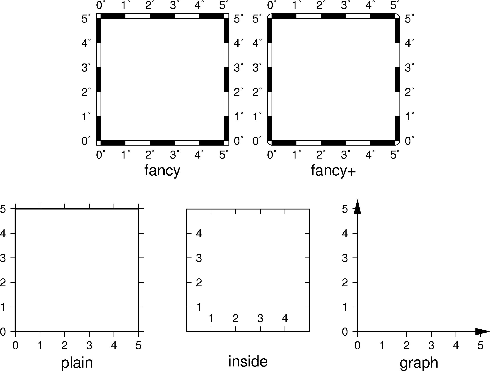

8.7 MAP参数¶
- MAP_DEFAULT_PEN
设置所有与
-W选项相关的画笔属性的默认值 [default,pen]在参数值的前面加上
+可以覆盖其他PEN相关参数中的颜色。
- MAP_FRAME_AXES
要绘制/标注的轴 [WSEN]
默认值为WSEN，绘制并标注四条边，可以通过
-B选项控制实际绘制的边。详情见 -B 选项 选项。
- MAP_FRAME_TYPE
底图边框类型 [fancy]
可选值包括
inside|plain|graph|fancy|fancy+。一般情况下，fancy边框类型仅适用于投影后的X、Y方向平行于经度纬度方向的情况下，比如rectangular投影、polar投影。对于某些投影，只能使用plain底图，即便MAP_BASEMAP_TYPE被设置为fancy。下图给出了不同的底图边框类型的效果：
图 8.4 GMT底图边框类型
{kind=link}
- MAP_FRAME_PEN
- 绘制底图类型为plain时边框的画笔属性 [
thicker,black]
- MAP_FRAME_WIDTH
- 设置底图类型为fancy时的边框宽度 [
5p]
- MAP_ORIGIN_X
- 新绘图在纸张上的原点的X坐标 [1i]
- MAP_ORIGIN_Y
- 设置新绘图在纸张上的原点的Y坐标 [1i]
- MAP_LOGO
是否在左下角绘制GMT时间戳 [false]
可以取
true|false，等效于在命令行中使用-U选项。
- MAP_LOGO_POS
- GMT时间戳相对于当前绘图原点的对齐方式与位置 [
BL/-54p/-54p]
- MAP_TITLE_OFFSET
- 图标题的底部与轴标注（或轴标签）的顶部之间的距离 [14p]
- MAP_SCALE_HEIGHT
- 地图比例尺的高度 [5p]
- MAP_TICK_PEN
- 同时设置
MAP_TICK_PEN_PRIMARY和MAP_TICK_PEN_SECONDARY的值
- MAP_TICK_PEN_PRIMARY
- 一级刻度的画笔属性 [thinner,black]
- MAP_TICK_PEN_SECONDARY
- 二级刻度的画笔属性 [thinner,black]
- MAP_TICK_LENGTH
- 同时设置
MAP_TICK_LENGTH_PRIMARY和MAP_TICK_LENGTH_SECONDARY的值
- MAP_TICK_LENGTH_PRIMARY
一级刻度的主刻度和次刻度的长度 [5p/2.5p]
若只给定一个长度值，则次刻度的长度假定为主刻度的一半
- MAP_TICK_LENGTH_SECONDARY
二级刻度的主刻度和次刻度的长度 [15p/3.75p]
若只给定一个长度值，则次刻度的长度假定为主刻度的25%
- MAP_LINE_STEP
绘制线段时所使用的最大步长 [0.75p]
地理投影下，两点之间会用大圆路径连接，因而GMT需要先计算大圆路径上的其他中间点的坐标，并将这些点用直线连起来。若该步长太大，会导致大圆路径看上去很不光滑。
- MAP_GRID_PEN
- 同时设置
MAP_GRID_PEN_PRIMARY和MAP_GRID_PEN_SECONDARY的值
- MAP_GRID_PEN_PRIMARY
- 一级网格线的线条属性 [default,black]
- MAP_GRID_PEN_SECONDARY
- 二级网格线的线条属性 [thinner,black]
- MAP_GRID_CROSS_SIZE
- 同时设置
MAP_GRID_CROSS_SIZE_PRIMARY和MAP_GRID_CROSS_SIZE_SECONDARY的值
- MAP_GRID_CROSS_SIZE_PRIMARY
- 一级网格交叉线的大小，0表示绘制连续的网格线 [0p]
- MAP_GRID_CROSS_SIZE_SECONDARY
- 二级网格交叉线的大小，0表示绘制连续的网格线 [0p]
- MAP_ANNOT_OFFSET
- 同时设置
MAP_ANNOT_OFFSET_PRIMARY和MAP_ANNOT_OFFSET_SECONDARY的值
- MAP_ANNOT_OFFSET_PRIMARY
- 一级标注的开始位置与刻度尾端间的距离 [5p]
- MAP_ANNOT_OFFSET_SECONDARY
- 二级标注的底部与secondary标注的顶部之间的距离 [5p]
- MAP_LABEL_OFFSET
- 轴标注底部与轴标签顶部间的距离 [8p]
- MAP_VECTOR_SHAPE
矢量箭头的形状 [0]
取值范围为-2到2。0表示矢量头为三角形，1表示箭头形状，2表示打开的V字。其他的中间值代表了两种形状的中间值。
- MAP_DEGREE_SYMBOL
在地图上绘制“度”时所使用的符号 [ring]
可以取
ring|degree|colon|none
- MAP_ANNOT_MIN_ANGLE
- 对于某些倾斜投影方式而言，如果标注的基线与地图的边界之间的夹角小于该值，则不绘制标注。合理的取值范围为
[0,90][20]
- MAP_ANNOT_MIN_SPACING
- 在某些倾斜投影中，相邻两个标注之间的最小距离，若标注的距离小于该值，则不绘制 [0p]
- MAP_ANNOT_ORTHO
控制哪些轴的标注垂直于轴 [we]
该参数可以将
wesnz做任意组合
- MAP_ANNOT_OBLIQUE
- 见官方文档
- MAP_POLAR_CAP
- 控制网格线在两极附近的显示，见官方文档